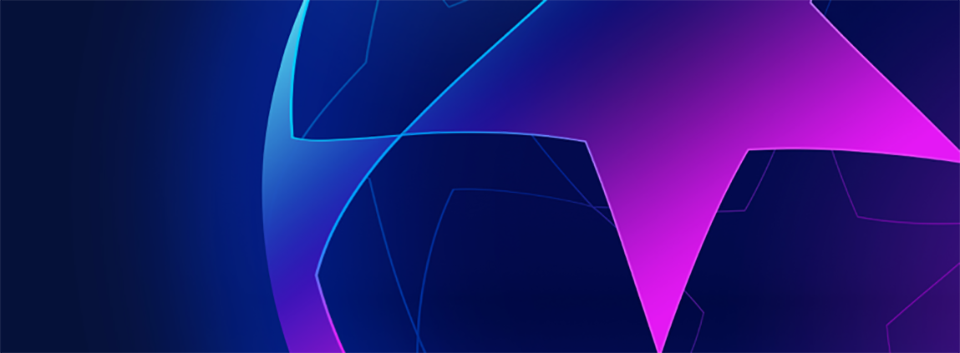
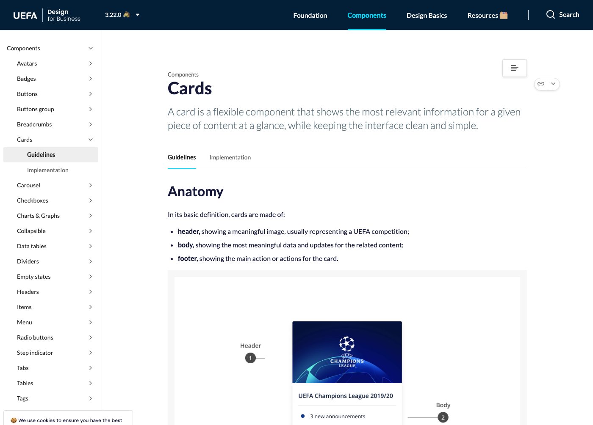
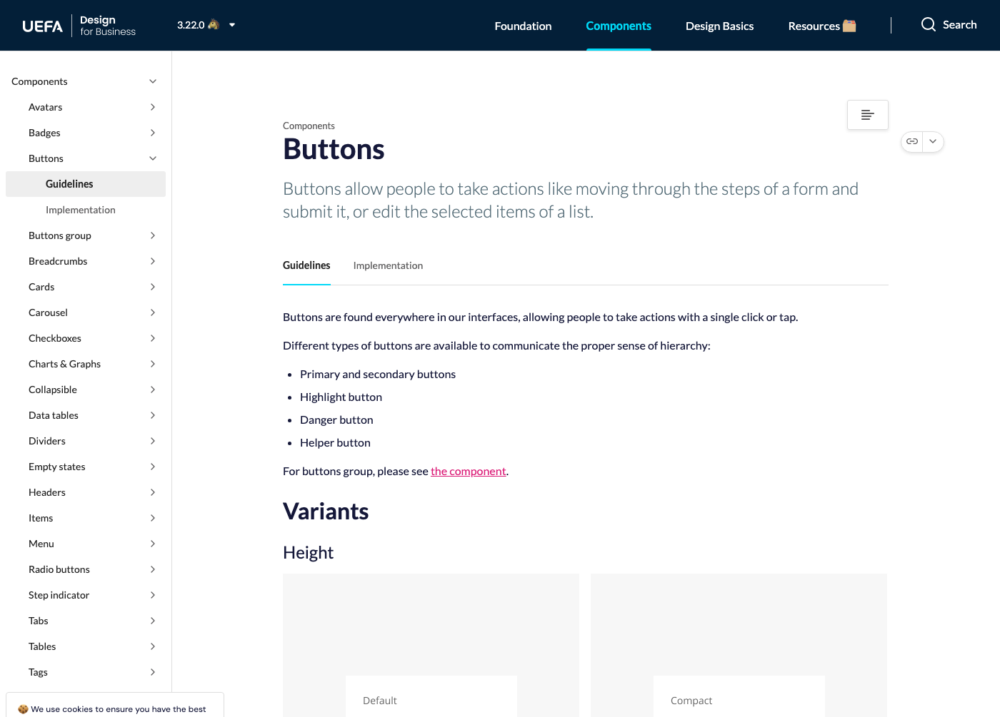
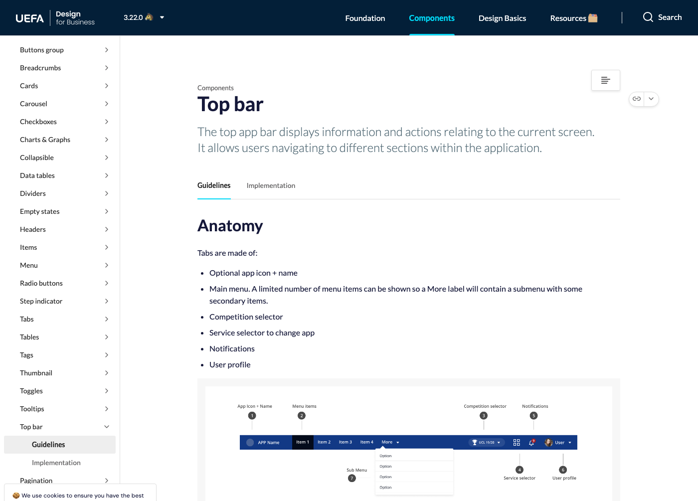
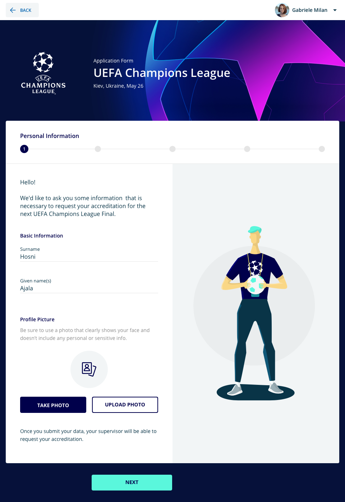
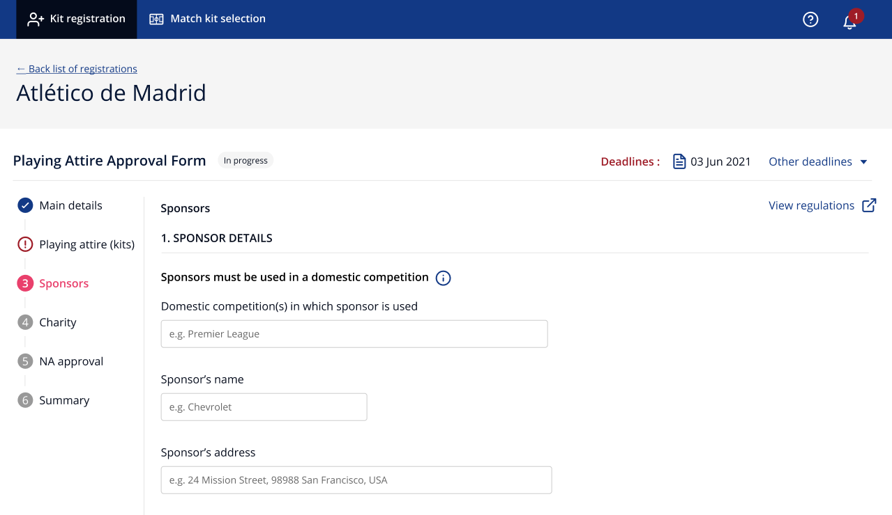

A way of working
During my two years at UEFA, I dedicated roughly 25% of my time to maintaining, evolving and promoting the B2B design system across UEFA's B2B platforms.
Together with another product designer and a front-end developer, we continuously created and updated components in the Figma library — keeping them aligned with business, project and user needs — and thoroughly documented everything in Zeroheight to support consistency and adoption across teams.
View the UEFA B2B design system →

Competition branding lived in the system — Champions League, Europa League and the rest of the UEFA calendar, applied consistently across internal tools.
Key responsibilities
- Design and maintain components in the Figma library, and document them in Zeroheight — always in sync with the rest of the DS team and part of the communication of updates.
- Design more complex components: top bar, data tables, step indicators, carousel, collapsible panels, motion concepts, and all competition branding.
- Keep the backlog updated with new ideas, and discuss and agree follow-ups with the team.
- Create and promote ways of working and collaboration with product and dev teams so they adopt the DS in new projects.
- Promote the design system internally across UEFA's tech department.
- Stay in constant communication with the B2C design system team to keep experiences consistent across the entire UEFA organization.

Cards in the system: competition header, status body, and a single action — documented so every team used the same pattern.

Buttons documented with variants and heights — the everyday language of every B2B form.

The top bar: app identity, navigation, competition selector, notifications and profile — one of the more complex components in the library.
The tools it served
The system was the shared language for UEFA’s internal products — accreditation, club operations, matchday volunteering — so each team did not invent its own UI.

Accreditation for Champions League: competition theming, a step indicator, and form patterns from the library.

Kit registration for clubs — a dense B2B flow on the same components: stepper, fields, status, actions.
Achievement
The UEFA B2B Design System became the foundation for all new design and development initiatives — ensuring consistency, scalability and efficiency across projects.